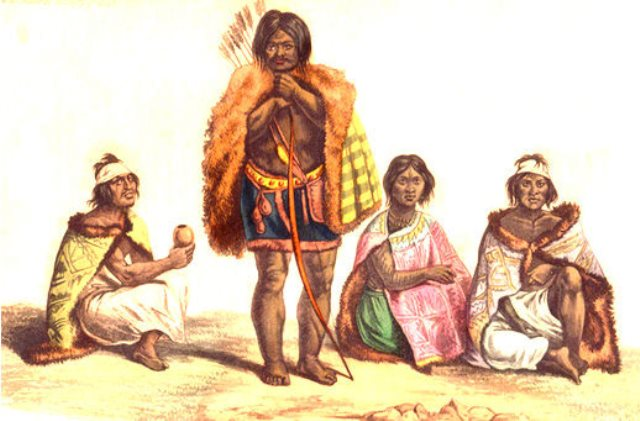

Vestimenta
Usaban una especie de delantal o taparrabos, de piel o de algodón. Producto este obtenido, seguramente, por comercio con los guaraníes. En las estaciones frías, usaban el típico manto de piel patagón llamado quiyapí. Los adornos corporales y faciales formaron parte de sus elementos mágicos.

Cuando llegaban a la pubertad se les trazaban tres rayas azules en el rostro, a través de la nariz, cruzada de una a otra mejilla. Desde el siglo XVI se ponían un tarugo en la nariz.
A los pocos días de nacido un niño, en el labio inferior se le colocaba el barbote, que debía llevar siempre.